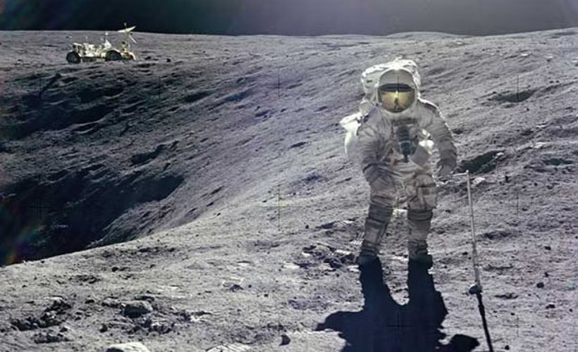
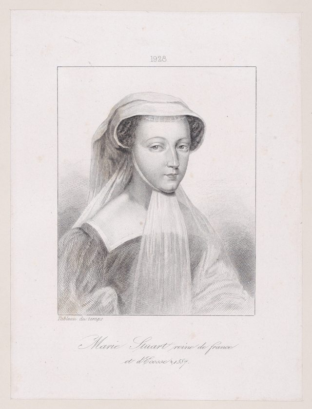
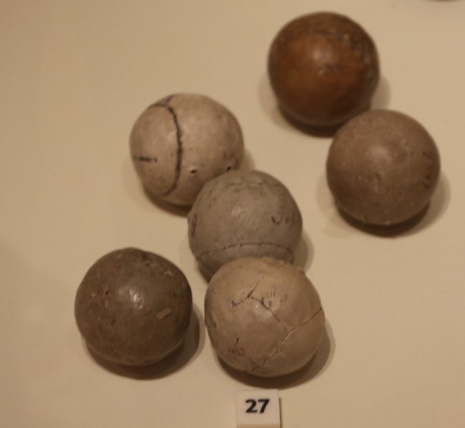
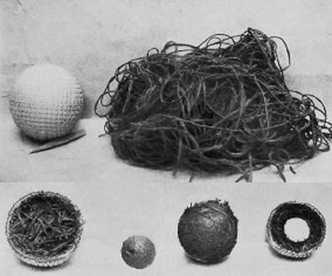

골프는 600년이 넘는 역사를 가진 운동입니다. 그 긴 세월 동안 믿기 어려운 기록과 재미있는 일화들이 쌓였죠. 오늘은 조금 가볍게, 알고 나면 누군가에게 들려주고 싶어지는 골프 이야기들을 모아봤습니다.
🌙달에서 골프를 친 사람이 있습니다

1971년, 아폴로 14호의 우주비행사 앨런 셰퍼드는 달 표면에서 골프공을 쳤습니다. 그는 6번 아이언 헤드를 우주복에 몰래 가져가, 한 손으로 공을 쳐냈죠. 중력이 지구의 6분의 1인 달에서 공은 멀리도 날아갔습니다. 그는 인류 역사상 지구 밖에서 공을 친 유일한 사람으로 남았습니다.
🚫나라가 골프를 금지한 적이 있습니다
15세기 스코틀랜드에서는 사람들이 골프에 빠져 궁술·군사 훈련을 소홀히 했고, 결국 1457년 제임스 2세 왕이 골프를 금지하는 법까지 만들었습니다. 영국에서도 비슷한 이유로 골프가 금지된 적이 있었죠. 국가가 법까지 만들며 막아야 했던 스포츠라니, 지금 생각하면 새삼스럽습니다.
📅화요일에 골프를 가장 적게 칩니다
통계적으로 일주일 중 골프를 가장 적게 치는 요일은 화요일이라고 합니다. 주말이 붐비는 건 당연하지만, 하필 화요일이 가장 한가하다는 게 소소한 재미죠. 혹시 한가한 필드를 원한다면 참고해볼 만합니다.
👜'캐디'는 어디서 왔을까요

골프백을 들고 도와주는 캐디(caddie)라는 말은 프랑스어 '카데(cadet)'에서 유래했다고 전해집니다. 스코틀랜드 메리 여왕이 프랑스에서 자라며 자신을 도와주던 귀족 자제들을 카데라 불렀고, 그 말이 골프로 건너와 캐디가 되었다는 설이죠. 메리 여왕은 골프를 즐긴 최초의 여성 골퍼 중 한 명으로도 알려져 있습니다.
🪶공이 깃털이던 시절

옛 골프공 페더리(깃털공)는, 장인 한 명이 하루 종일 만들어도 몇 개밖에 못 만들 정도로 고가였습니다. 골프공 하나가 지금의 고급 식사보다 비쌌던 시절이 있었던 셈이죠. 골프가 오랫동안 귀족의 스포츠였던 데는 다 이유가 있었습니다.

마치며
오늘 라운드에서 이 이야기 하나를 슬쩍 꺼내보면, 동반자들이 눈을 반짝일지 모릅니다. 골프는 공을 치는 네 시간 동안 나눌 이야기가 끊이지 않는 운동이니까요.
골프의 이야기는 풍부하지만, 결국 가장 재미있는 이야기는 내 스윙입니다. 내 스윙이 어떤 프로와 닮았는지, 그 이야기를 시작해 보세요.
내 스윙 분석하기 →